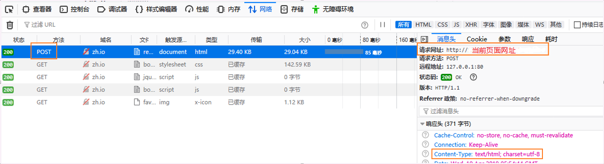

先查看<form>标签是否有action属性，如果没有，并且最后<button>标签的type属性为'submit‘时，默认提交位置就是当前页面
如果在页面右键检查，点击网络，会在开头发现这样的post包：

在右侧消息头处可见，请求网址为当前网址，并且响应头部类型为html
所以只要把form表单里最后提交按钮的type="submit"换为type="button"，把按钮变成原生按钮，
就可以正确使用ajax方法传递数据，原因就是form表单最后的提交按钮与使用ajax传递数据冲突了
因为这个原因浪费了挺久时间，甚至把代码又从头到尾写了一遍（感觉自己好蠢啊！），总结了一下调试过程。
先贴一下ajax代码：
$(function () {
$("#register").on('click',function () {
$.ajax({
type: 'post',
url:"{:url('insert')}",
data:$('#login').serialize(),
dataType:'json',
success:function (data) {
alert('成功');
},
error:function () {
alert('error');
}
})
})
});这里‘#register’是提交按钮，‘#login’是表单，url发送到一个php脚本（插入表单数据到数据库）。
用谷歌浏览器打开页面，点击注册按钮后，当前页面刷新，没有任何反应。
正常情况下，ajax执行正确或失败，根据上述代码都应该有消息弹窗，于是感觉到哪里出了问题。
打开数据库，发现表单的数据都已经插入到数据库了，说明后台php脚本是运行成功的，只是在返回数据的时候出现了问题。
右键检查找到该post包，发现响应头部类型为html，而我设置的返回类型为json。
更换了Edge浏览器，问题同样是数据库插入了数据，但是结果没有消息弹窗。
更换火狐浏览器，再次点击注册按钮时出现了消息弹窗，但是闪了一下就没了！隐隐约约发现弹窗显示为‘error’（感谢火狐浏览器！）
根据alert弹窗一闪而过这个线索，发现了解决问题的这篇文章，同时感谢这篇文章的博主。